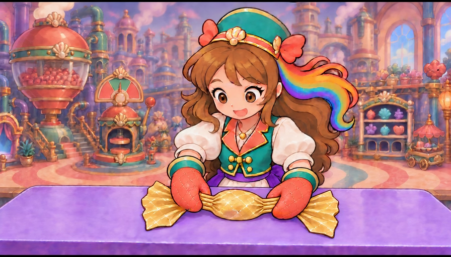
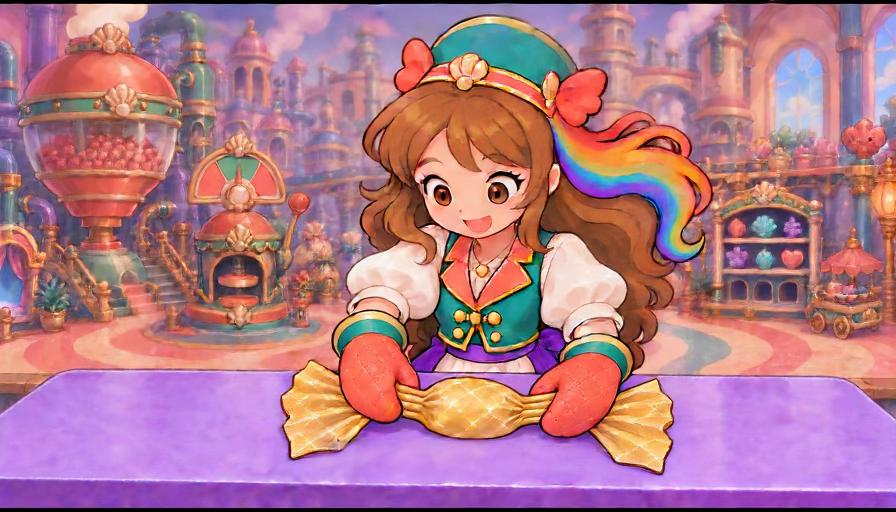
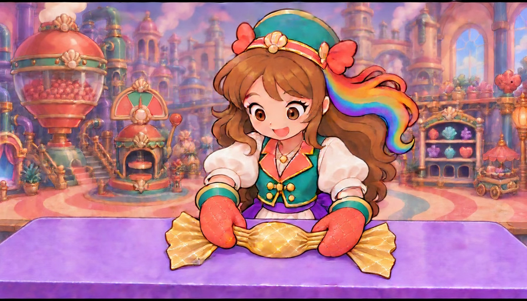
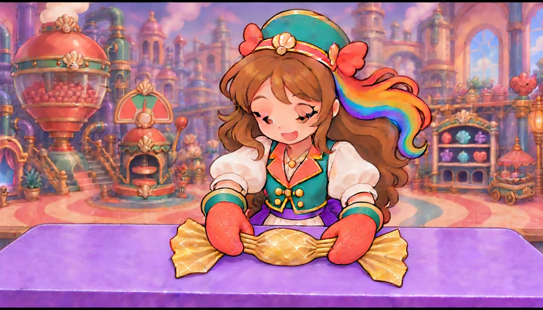
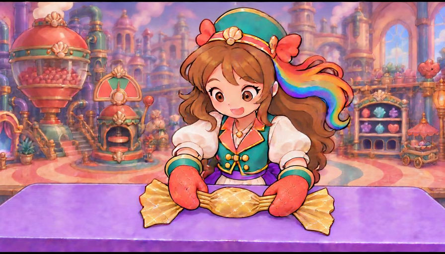

Opposite wrist-twist component — rejected 2.2/5
All 41 complete decoded896×512 canvases and 12 component opinions were directly reviewed. Both hands retain their grips and fans remain attached, but neither wrist performs the opposing roll and the neck pleats never wind closed. The principal motion is unrequested facial acting.
Source endpoint 4.5 provisional; actual in-game WRAP 2.8 unchanged. This is a local motion reference with one conditioned start image. The desired twist endpoint was a human QC reference, not a conditioned end image. No runtime or cinematic acceptance.
Component overview and full remaining objective · Every frame/component opinion · Exact manifest saved before dispatch · Actual render receipt
| Component | Draft score | Evaluation |
|---|
| exactly two principal hand groups | 4.6/5 | Two principal mittens remain connected to their own sleeves; no extra operator or detached coral hand remnants appear in this bounded study. |
| sleeve cuff mitten topology | 4.4/5 | Both cuffs and rounded mittens remain broadly coherent. Small thumb/cuff contour changes still require owner and actual-game identity review. |
| left short neck grip | 4.4/5 | Left hand retains its own loose pleat group throughout. Stable holding does not demonstrate thumb-under wrist rotation or a finished twist. |
| right short neck grip | 4.4/5 | Right mitten stays with its own pleat group and outside fan. Its quilted back never makes the required across-neck roll. |
| opposed wrist rotation | 1.2/5 | Neither wrist visibly executes the instructed opposite roll. Minor contour variation and head acting cannot count as a contact-driven rotational action. |
| short opposite paper winding | 1.1/5 | Both gold neck groups remain long parallel open pleats. They do not become the short diagonal opposite windings seen in the source target endpoint. |
| single wrapper fan conservation | 4.3/5 | Both broad gold fans stay continuously attached outside the hands. Small silhouette/texture variation remains, but the earlier cuff-fan fusion is absent here. |
| covered oval identity | 4.4/5 | One central gold oval stays covered and opaque. No new sweet or exposed red centre appears, though slight size/paint variation remains. |
| table support | 4.4/5 | The central body stays low on the same purple worktable; there is no lift/drop. Full contact/body registration in actual gameplay remains unassigned. |
| character scene registration | 3.8/5 | Entry placement mostly holds, but late head/eyes/mouth acting and modest contour changes distract from the absent wrist action. |
| finished twist held endpoint | 1.2/5 | Final pose still holds loose parallel neck folds with near-entry hand orientations. The required finished short twists are absent. |
| whole opposed twist component | 2.2/5 | Rejected: coherent grips, fans and table support improve conservation, but the defining opposed wrist motion and paper winding never occur. |
Frame 0 · 0.000s · pose graphics 4.3/5
Entry shows two sleeve-owned coral mittens holding the short untwisted gold pleats. One covered oval and both broad fans rest on the table; no torque yet.
Complete action, current game and owner acceptance unassigned for this individual canvas.
Frame 1 · 0.042s · pose graphics 4.3/5
Both neck contacts retain the entry pose and the same open pleats. This is a stable grip still, not an opposing twist.
Complete action, current game and owner acceptance unassigned for this individual canvas.
Frame 2 · 0.083s · pose graphics 4.3/5
Hands stay in their original orientations. The central sweet remains opaque and the loose neck pleats remain parallel.
Complete action, current game and owner acceptance unassigned for this individual canvas.
Frame 3 · 0.125s · pose graphics 4.3/5

Small texture changes occur while both mittens stay on their neck groups; no readable wrist roll or paper winding.
Complete action, current game and owner acceptance unassigned for this individual canvas.
Frame 4 · 0.167s · pose graphics 4.3/5
Two connected mittens remain at the original contacts. Both fans retain their broad spread with open pleats between them and the body.
Complete action, current game and owner acceptance unassigned for this individual canvas.
Frame 5 · 0.208s · pose graphics 4.3/5
Entry hold continues. The source hand orientations and open gold neck folds remain unchanged at the intended action start.
Complete action, current game and owner acceptance unassigned for this individual canvas.
Frame 6 · 0.250s · pose graphics 4.3/5
During the instructed twist interval both hands still face as at entry. Paper pleats have not wound into a short closure.
Complete action, current game and owner acceptance unassigned for this individual canvas.
Frame 7 · 0.292s · pose graphics 4.3/5
Small painted variation appears on the central body, but each mitten keeps the same near-front orientation and own neck contact.
Complete action, current game and owner acceptance unassigned for this individual canvas.
Frame 8 · 0.333s · pose graphics 4.3/5
The covered central body remains low. Both untwisted pleat groups and broad fans persist without an opposite rotational consequence.
Complete action, current game and owner acceptance unassigned for this individual canvas.
Frame 9 · 0.375s · pose graphics 4.3/5
Two principal mittens and their sleeve cuffs remain coherent. The desired left-under/right-over wrist pairing is not visible.
Complete action, current game and owner acceptance unassigned for this individual canvas.
Frame 10 · 0.417s · pose graphics 4.3/5
Hands continue holding rather than visibly rotating. The short neck pleats stay long and horizontally parallel.
Complete action, current game and owner acceptance unassigned for this individual canvas.
Frame 11 · 0.458s · pose graphics 4.3/5
The left thumb contour varies slightly, but this does not establish a continuing opposite wrist turn or a paper closure.
Complete action, current game and owner acceptance unassigned for this individual canvas.
Frame 12 · 0.500s · pose graphics 4.3/5
Both neck grips remain broadly stable. Neither gold neck has acquired the short diagonal winding visible in the target endpoint.
Complete action, current game and owner acceptance unassigned for this individual canvas.
Frame 13 · 0.542s · pose graphics 4.3/5
Same supported candy and two spread fans remain. The right mitten back has not rolled diagonally across its neck.
Complete action, current game and owner acceptance unassigned for this individual canvas.
Frame 14 · 0.583s · pose graphics 4.3/5

Left thumb/neck contact changes slightly while the main mitten retains its orientation; right wrist remains near the entry angle.
Complete action, current game and owner acceptance unassigned for this individual canvas.
Frame 15 · 0.625s · pose graphics 4.3/5
The two hands still hold the pleats without visibly rolling oppositely. Paper folds stay open at both sides of the oval.
Complete action, current game and owner acceptance unassigned for this individual canvas.
Frame 16 · 0.667s · pose graphics 4.3/5

Small changes in left thumb highlight do not provide a readable torque arc. Both cuffs remain attached and fans conserved.
Complete action, current game and owner acceptance unassigned for this individual canvas.
Frame 17 · 0.708s · pose graphics 4.3/5
Supported central oval remains covered. No finished short twist or substantial opposite hand orientation appears.
Complete action, current game and owner acceptance unassigned for this individual canvas.
Frame 18 · 0.750s · pose graphics 4.3/5
Both wrists remain close to the original pose at the middle of the action. Gold neck folds are still parallel and loose.
Complete action, current game and owner acceptance unassigned for this individual canvas.
Frame 19 · 0.792s · pose graphics 4.3/5
Neck contacts stay intact, but the pictured left-under/right-over endpoint has not been reached. This remains a hold.
Complete action, current game and owner acceptance unassigned for this individual canvas.
Frame 20 · 0.833s · pose graphics 4.3/5
Hands and fans retain the entry arrangement with minor painted shimmer. No causal contact-to-winding change.
Complete action, current game and owner acceptance unassigned for this individual canvas.
Frame 21 · 0.875s · pose graphics 4.3/5
Both mittens remain sleeve-owned and touching their own pleats. The parallel gold folds do not close into diagonal twists.
Complete action, current game and owner acceptance unassigned for this individual canvas.
Frame 22 · 0.917s · pose graphics 4.3/5
Neither wrist shows the specified opposed roll; the covered central body and spread fans remain stable.
Complete action, current game and owner acceptance unassigned for this individual canvas.
Frame 23 · 0.958s · pose graphics 4.3/5
Late action still contains long open neck pleats. Contact stability is useful but cannot pass the missing twist.
Complete action, current game and owner acceptance unassigned for this individual canvas.
Frame 24 · 1.000s · pose graphics 3.8/5
Hands continue their hold while the face begins changing and the head lowers. Working material still has no short wound closures.
Complete action, current game and owner acceptance unassigned for this individual canvas.
Frame 25 · 1.042s · pose graphics 3.8/5
Eye/head acting grows with the same hand and wrapper pose. The generated motion is concentrated in expression rather than the wrists.
Complete action, current game and owner acceptance unassigned for this individual canvas.
Frame 26 · 1.083s · pose graphics 3.8/5
Eyelids lower and mouth changes. Both neck groups remain untwisted; no clear opposed wrist movement accompanies the acting.
Complete action, current game and owner acceptance unassigned for this individual canvas.
Frame 27 · 1.125s · pose graphics 3.8/5
Head dips and eyes nearly close while the two mittens keep their original neck positions and orientations.
Complete action, current game and owner acceptance unassigned for this individual canvas.
Frame 28 · 1.167s · pose graphics 3.8/5
Closed/downward eyes and changed mouth persist. Gold neck folds are still loose parallel lines, not the target short opposite windings.
Complete action, current game and owner acceptance unassigned for this individual canvas.
Frame 29 · 1.208s · pose graphics 3.8/5
Unrequested facial acting continues while both sleeve-owned mittens remain static at their grips. The candy stays supported.
Complete action, current game and owner acceptance unassigned for this individual canvas.
Frame 30 · 1.250s · pose graphics 3.8/5
At the intended finished hold, both gold necks remain open. Head/eye acting cannot substitute for physical paper closure.
Complete action, current game and owner acceptance unassigned for this individual canvas.
Frame 31 · 1.292s · pose graphics 3.8/5
The face is still lowered and partially closed-eyed, but hand orientation and gold pleat structure remain near entry.
Complete action, current game and owner acceptance unassigned for this individual canvas.
Frame 32 · 1.333s · pose graphics 3.8/5

Both fans stay attached and the central oval stays covered. No finished opposite twist has occurred before the hold.
Complete action, current game and owner acceptance unassigned for this individual canvas.
Frame 33 · 1.375s · pose graphics 3.8/5
Hands preserve grip ownership without a visible torque trajectory; short diagonal windings are still absent.
Complete action, current game and owner acceptance unassigned for this individual canvas.
Frame 34 · 1.417s · pose graphics 3.8/5
Head rises slightly and eyes begin reopening. Both wrists and long parallel neck pleats remain effectively unchanged.
Complete action, current game and owner acceptance unassigned for this individual canvas.
Frame 35 · 1.458s · pose graphics 3.8/5

Eyes reopen with an altered mouth, while the two hands still hold the same loose fold groups rather than two finished twists.
Complete action, current game and owner acceptance unassigned for this individual canvas.
Frame 36 · 1.500s · pose graphics 3.8/5
Late pose returns toward entry expression. Hand topology remains broadly coherent, but paper closure is still missing.
Complete action, current game and owner acceptance unassigned for this individual canvas.
Frame 37 · 1.542s · pose graphics 3.8/5
Both mittens remain at their initial contacts; the right mitten back never rolls across the neck as specified.
Complete action, current game and owner acceptance unassigned for this individual canvas.
Frame 38 · 1.583s · pose graphics 3.8/5
Near-final canvas retains two attached fans and a supported covered oval. Neither short gold neck is wound closed.
Complete action, current game and owner acceptance unassigned for this individual canvas.
Frame 39 · 1.625s · pose graphics 3.8/5
Final approach still reads as a steady hold, with minor pose/texture variation. The requested opposite rotational action remains absent.
Complete action, current game and owner acceptance unassigned for this individual canvas.
Frame 40 · 1.667s · pose graphics 3.8/5

Endpoint returns a nearly unchanged two-hand grip with open parallel neck folds, not two short diagonal twists. Rejected as a twist component despite useful hand/fan conservation.
Complete action, current game and owner acceptance unassigned for this individual canvas.